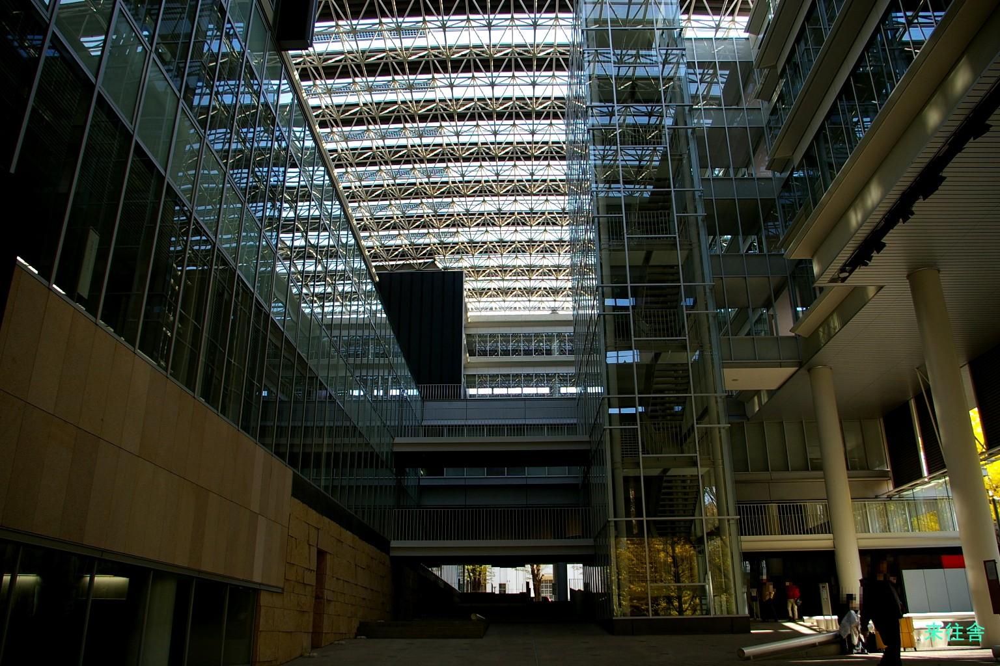

資料編 ／ 2026.11.28
写真・関連資料
発表で取り上げたサイトや記事、関連する記録をまとめています。
01 PCインターネット時代
- 旧 shimto.com 掲示板の記録（Nagaza）：2021年末の画面が保存されています。
- Lee & Lee, Keio Communication Review 37 (2015), pp. 27–39：p.31にポータル開設を2002年9月と記載。本発表の「2000年代初頭」は時期の区分です。
02 モバイル・SNS時代
- SHIMTO Media：記事、写真、動画の記録。
- 2024年1月28日：日本朝鮮族経済文化交流協会の会長交代：記事、写真と制作クレジットの例。
- トンネの寄稿者紹介（裴尚峰）：シムトでの編集活動は2016年から。本発表の2015年は時代の区分です。
03 AI時代
- 2025年11月15日：延辺大学日本校友会の会長交代・忘年会：写真、記事、動画、出典、団体・人のタグを一つの記事からたどれます。
- トンネについて：サイトの趣旨と活動の紹介。
会場とシンポジウム
